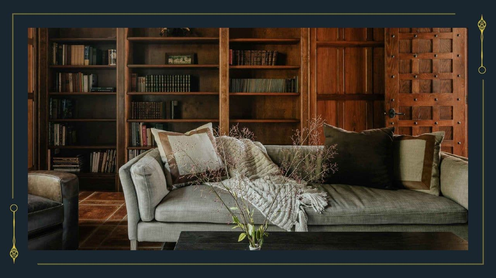

書斎
scene名：0325_E_01_書斎4
【書斎】
書斎に入る。本棚には学問書のジャンルが多く、辞書や図鑑などが置いてあるように見える。他にはソファーがある。
双葉がソファーに腰かけ本を読んでいた。
書斎に入る。本棚には学問書のジャンルが多く、辞書や図鑑などが置いてあるように見える。他にはソファーがある。
双葉がソファーに腰かけ本を読んでいた。
双葉と話す場合
>> 【会話のアイコン】をクリック
このまま書斎で調べものをする場合
>> 〘Next Scene〙をクリック
